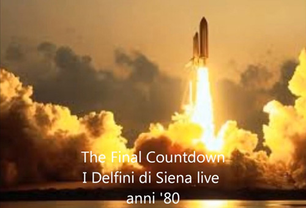

L’evoluzione musicale del gruppo permise ad alcuni componenti di riuscire a creare canzoni proprie e la decisione di fissarle in un disco non si fece attendere e portò alla scelta di due brani dal titolo “La vita continua” e “L’ora della verità”. Si era nel 1967 ed un autofinanziamento permise ai “nostri” di recarsi a Firenze presso lo “Studio 2” del marchio GRS (produttore tra l’altro di amplificatori musicali) dove in una sola serata i due pezzi furono registrati su nastro magnetico, stampati su disco bifacciale a “45 giri” al minuto e riprodotti in un relativamente alto numero di copie.
Alcuni di questi dischi furono distribuiti agli amici, altri venduti fino a rappresentare oggi una preziosa rarità nei cataloghi del mercato dell’usato dei dischi “beat”.
Tragicamente nel mese di Luglio dello stesso 1967 la morte sottrasse ai Delfini Marco Terzani, il chitarrista… tuttavia il gruppo riuscì a proseguire il suo cammino musicale con l’ingresso di Massimo Mercurio alla chitarra solista e di Fabio Corbelli (Doddo) in sostituzione di Gori alla chitarra ritmica.
A questo punto il repertorio godé di un notevole arricchimento ed ai pezzi di stile “pop” e “dancing” si aggiunse l’esecuzione di tutt’altro che facili composizioni “rock” di artisti singoli e gruppi quali Black Sabbath, Led Zeppelin, Cream e del celebratissimo Jimi Hendrix…
La metà degli anni ’70 vide avvicendarsi al basso più musicisti di ottimo livello quali Franco Caroni, Piero Cambi e Franco Boccucci e mentre Neri Corsini sostituì “Cipresso” Benvenuti alle tastiere, Mercurio si associò al gruppo di Riccardo Fogli e venne sostituito alla chitarra dal giovane e innovativo “Gilla”, al secolo Alberto Mattei.

(clicca sull'immagine per ascoltare "The final countdown"")
Insieme a diversi interventi nella formazione di altri musicisti, il repertorio ed il sound proseguirono nel tempo la loro evoluzione fino al genere “funky style” ed alla riproduzione dei primi vagiti della “disco music” … fino al 2007, quando Carlo Borgogni, la voce che dalla riunione del gruppo nel 1963 aveva virtuosisticamente padroneggiato il microfono principale, lasciò al futuro la gloriosa formazione dei Delfini di Siena.

 ACCADDE OGGI
ACCADDE OGGI